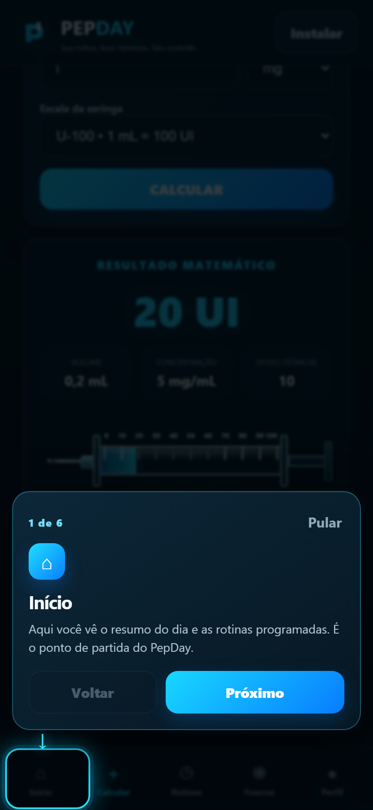
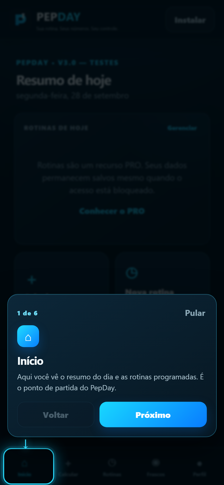

01
Contas em vários lugares
mg, mcg, mL e UI feitos cada vez em uma calculadora diferente.
O PepDay reúne calculadora, rotinas, frascos, histórico e acompanhamento em um só lugar — de um jeito simples, visual e feito para o dia a dia.

Anotações no bloco de notas, conta na calculadora, rotina na cabeça e frasco sem acompanhamento acabam virando informação espalhada.
mg, mcg, mL e UI feitos cada vez em uma calculadora diferente.
Sem uma visão do dia, fica mais difícil saber o que já foi registrado.
Saldo, histórico e previsão de término ficam difíceis de acompanhar manualmente.
Quando a informação está em vários lugares, consultar o passado vira trabalho.
Você informa seus próprios valores. O PepDay calcula, organiza e acompanha — sem recomendar dose, tratamento ou protocolo.
Converta mg, mcg, mL e UI e visualize o resultado em uma seringa U-100.
Organize frequências, dias e registros em uma agenda clara.
Acompanhe saldo, histórico e previsão de término.
Consulte registros anteriores sem alterar o que já aconteceu.
Dados locais primeiro e conta sincronizada quando possível.
Informe os valores do seu frasco e veja o resultado matemático.
Se quiser, transforme a informação em rotina e vincule a um frasco.
Registre o dia, veja histórico, saldo e previsão de término.
O app mantém o visual dark premium por dentro, enquanto o site apresenta o produto de forma clara e direta.

A ideia começou com uma pergunta simples: por que algo usado no dia a dia ainda precisava ficar espalhado entre calculadora, conversa, bloco de notas e lembrete?
O PepDay foi criado para centralizar cálculo matemático, organização e acompanhamento em uma experiência simples, visual e acessível pelo celular.
Ele não substitui orientação profissional e não recomenda tratamentos. O objetivo é ajudar você a organizar os valores e frequências que já foram definidos por você.
Para conhecer e usar a calculadora.
Para organizar e acompanhar sua rotina completa.
Mesmos recursos PRO com cobrança mensal.
Se o teste ou a assinatura terminar, seus dados continuam preservados. Ao voltar ao PRO, os recursos são liberados novamente.
Enquanto reunimos depoimentos reais autorizados, mostramos apenas benefícios verificáveis do produto — sem inventar experiências de clientes.
O resultado calculado aparece também na escala U-100 para facilitar a leitura do ponto correspondente.
Registros anteriores continuam disponíveis para consulta sem serem reescritos silenciosamente.
O término do teste ou da assinatura não apaga seus dados; o acesso pode ser retomado depois.
Sem cartão para começar. Abra no celular e veja o PepDay funcionando.